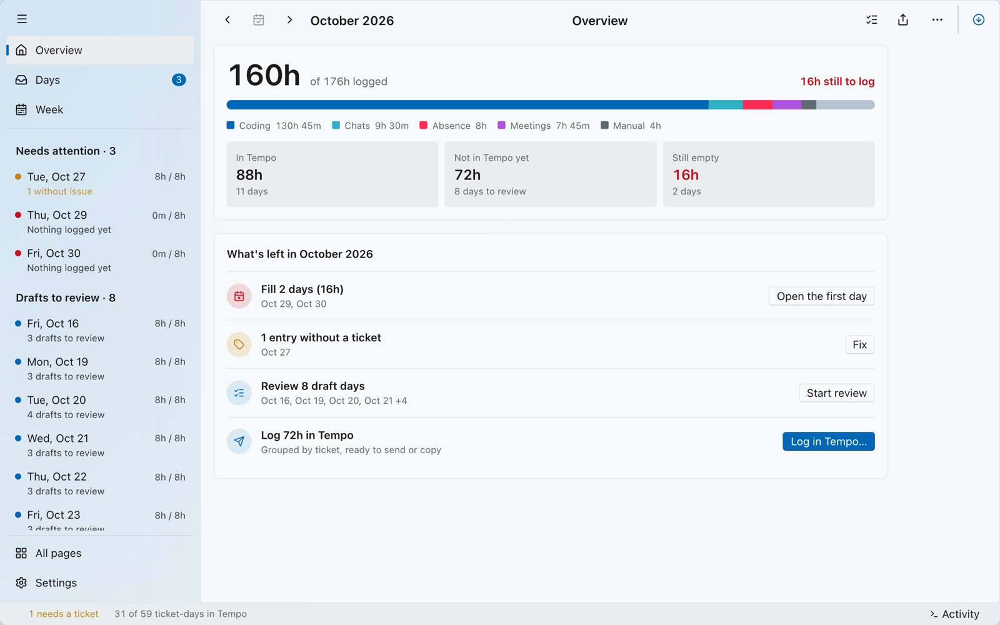
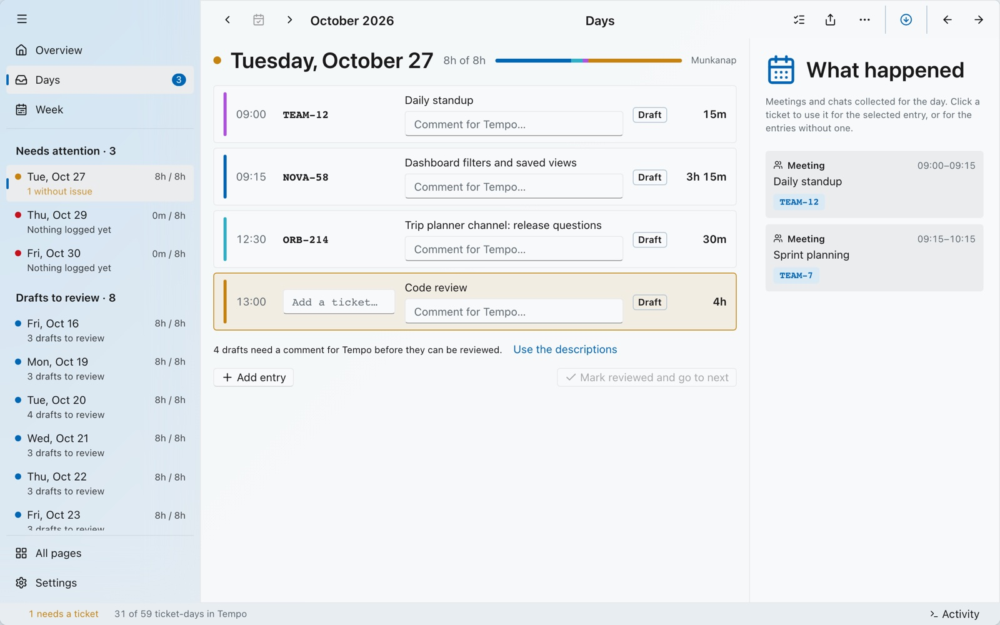
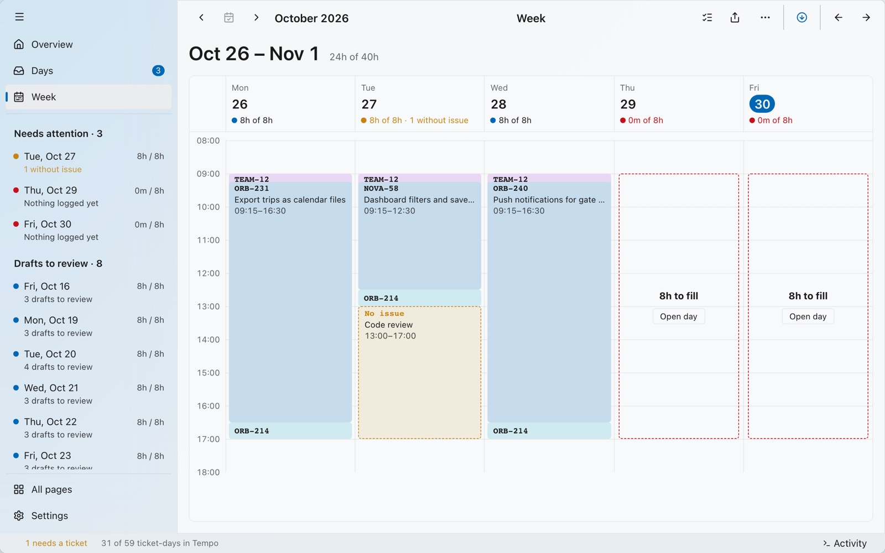
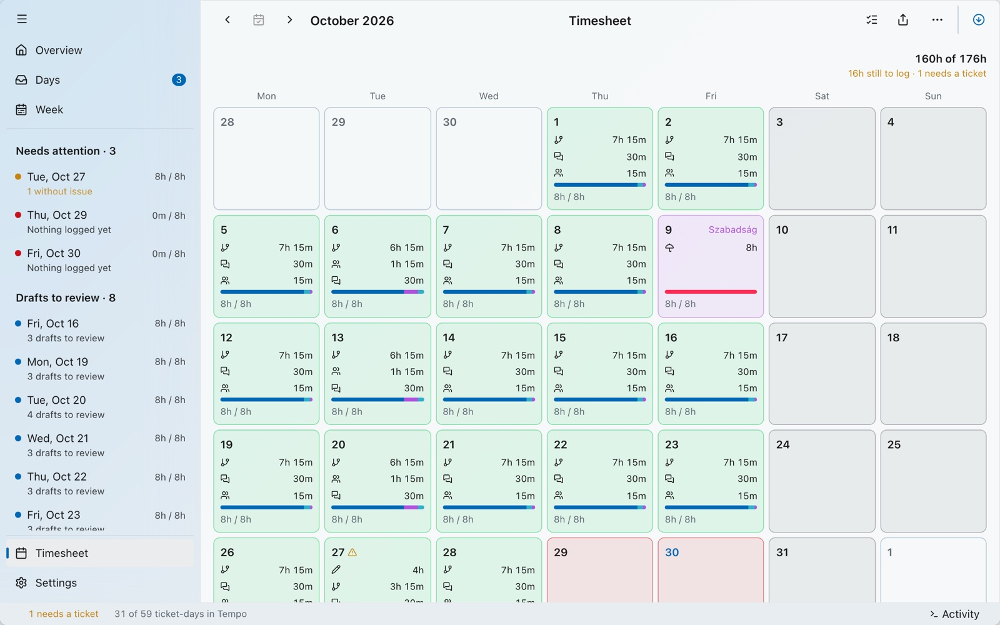
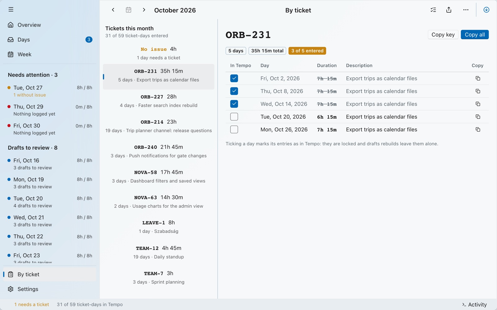

You did the work. Logging it shouldn't be a second job.
WorkLogger rebuilds your worklogs from what you actually did: git commits, calendar meetings, chats and
your work sessions. You review the drafts, fix what needs a ticket, and send them to Tempo or Jira.
Free and open source (MIT). macOS, Windows and Linux. Your data stays on your machine.
Why logging work is harder than the work
Nobody gets into software to fill in timesheets. Yet every month the same questions come back: what did I
do on the 3rd, which ticket was that meeting, and why is Wednesday six hours short? These are the usual
ways it goes wrong, and what WorkLogger does about each one.
Context switching eats the memory
A bug, a review, a question in chat, back to the bug, a quick deploy. You touched six things before lunch
and none of them left a note. By Friday the morning is a blur; by month end it is gone.
reads it back from git history, the calendar and chats, so memory isn't the only record.
Many small tickets, each with its own key
Ten minutes on one ticket, twenty on another, five on a third. Each one wants a key, a duration and a
comment in Tempo. The work was quick; logging it is not.
groups the month by ticket and day, with the text ready to copy, or sends it all in one go.
Meetings chop the day up
Standup, planning, a sync that ran long, a 1:1. Each one takes a ticket too, and the gaps between them are
where the actual work happened, in 40-minute pieces.
reads your calendar (Google, or any ICS feed) and gives meetings their ticket by rule.
Chat is work that leaves no trace
Forty minutes helping a colleague in chat is real work, but no ticket moved and no commit landed. It's the
first thing forgotten and the last thing logged.
imports Google Chat by day, measures the active time, and lets you log a conversation (or always log it to one ticket).
Work without a ticket
Code review, onboarding a colleague, a production fire. Tempo needs an issue key for every minute, and
half the useful work of a day doesn't come with one.
flags every entry without a ticket in orange and won't let it slip into an export unnoticed.
Month-end archaeology
Thirty days later you dig through git log, old calendar weeks and chat history to rebuild a
month, one day at a time. "wip 2" is not much of a clue.
collects it for you, across every repository, and estimates time from the gaps between your commits.
Every day has to add up
Eight hours, or whatever HR says you worked. Leave and public holidays don't count. Estimates come out at
7h 25m and you round by hand, day after day.
scales each day to its target, rounds to your granularity, and skips leave and holidays.
Two systems that disagree
The HR system has your sessions and breaks; Tempo has your tickets. When the two don't match, someone
asks, and you get to explain the difference.
can read your work sessions and uses HR's worked hours as each day's target, and shows where they differ.
Typing it all in, by hand
Even with everything worked out, it still has to go into Tempo: ticket, date, duration, comment, save,
next. Fifty-six times this month.
sends reviewed entries through the Tempo or Jira API, or gives you a checklist to tick off.
How WorkLogger works
It doesn't track you while you work. Once in a while (daily, weekly, or once at month end) it reads what
already exists and turns it into drafts.
Collect
Git commits by your email from your workspace folders, calendar meetings, Google Chat days, and HR work sessions.
Draft
Ticket keys come from branch names, commits, meeting rules and project periods. Each day is scaled to its target.
Review
Walk the days that need you. Entries without a ticket are orange; comments for Tempo are one click away.
Send
Push to Tempo or Jira, export Markdown, CSV or JSON, or tick ticket-days off as you type them in by hand.
Month end, in about ten minutes
A to-do list for the monthDays still empty, entries without a ticket, drafts to review, time not yet in Tempo.
One day at a timeEach day's entries next to the meetings and chats it came from; use their tickets with a click.
Week and month viewsA calendar of what happened, and a timesheet you can drag entries across.
By ticketEvery ticket-day with its duration and text, for copying into Tempo or ticking off.
Your edits are keptChange an entry and it locks: rebuilding the drafts never overwrites your work.
Several Jira sitesProfiles per site, with Jira's own worklogs or Tempo, picked by project key.
What it looks like
The look follows your system: Windows, macOS or Linux, light or dark. These screens show the app's sample
month: October, with leave on the 9th, a code review without a ticket on the 27th, and two days still empty.

Overview: where the month stands, and what's left to do in the order you'd do it.

Days: fix what blocks Tempo, with that day's meetings and chats beside it.

Week: the days as a calendar; empty days are hard to miss.

Timesheet: the month at a glance; drag entries between days.

By ticket: copy each day into Tempo and tick it off, or send them all.
Your work stays on your machine
Your commits, meetings and conversations say a lot about you. WorkLogger keeps them in a local database
and only talks to the services you set up.
Where things are kept
Everything in one SQLite file in your user config folder (WorkLogger/worklogger.sqlite).
API tokens in your system keyring, never in the database. The app starts locked until the keyring is read.
Chat message text is read when you open a conversation and is never written to the activity log.
Who it talks to
Only the services you add: your Jira site, Tempo, Google (Chat, and Calendar if you connect it), your HRmaster site, and the calendar feed URLs you paste in. There are no analytics or telemetry. The activity console shows every request it makes, with secrets masked.
Good to know before you start
WorkLogger grew out of one team's month ends. Some parts are general, some are not.
Work sessions need HRmaster
The work-sessions source reads one Hungarian HR product. Without it, days default to fixed hours (8h by default).
Google pages can change
Without the Calendar API, Google Chat and Calendar are read from their signed-in web pages. That can break when Google changes them.
Calendar feeds
ICS feeds work with IANA time zones and common repeat rules. Some Outlook feeds (Windows zone names, unusual rules) may come out wrong.
Unsigned builds
The first releases aren't code-signed, so macOS Gatekeeper and Windows SmartScreen will ask before the first start.
Get WorkLogger
Download a build for your system from the releases page, or build it yourself. The interface is in English
and Hungarian.
You need Go 1.26 or later, Node 24, Wails v3.1 and Task.
# the Wails CLI, once
go install github.com/wailsapp/wails/v3/cmd/wails3@v3.1.0
git clone https://github.com/molnarroland/WorkLogger.git
cd WorkLogger
task build # the app lands in bin/
task check # formatting, lint and every test